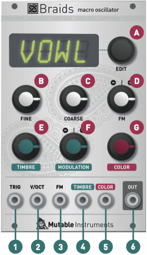

This user manual documents the version 1.8 of the firmware. If the settings and menus of your unit look a bit different, it's likely that an older firmware revision is installed. You can find out which version is installed by clicking on the encoder and scrolling to the end of the menu. If an older version is installed, Please upgrade!
Overview
Braids is a voltage-controlled digital sound source. It features 45 waveform synthesis models, which cover techniques such as FM, wavetable synthesis, waveguide synthesis or analog emulation. Most synthesis models are built with one or several oscillators connected through crossfaders, modulators, filters, or delay lines. Each synthesis model is controlled by 2 parameters, called Timbre and Color. Most of the time, Timbre will impact the brightness of the sound.
Installation
Braids is designed for Eurorack synthesizer systems and occupies 16 HP of space.
Boards manufactured prior to july 2015 require a -12V/+12V / +5V supply (2x8 connector), and draw 15mA from the -12V/+12V rails and 85mA from the +5V rail.
Boards manufactured after july 2015 require a -12V/+12V (2x5 connector), and draw 15mA from the -12V rail and 100mA from the +12V rail.
In any case, the red stripe of the ribbon cable must be oriented on the same side as the "Red stripe" marking on the printed circuit board.
Controls

A: LED display and rotary encoder. When the module starts, the LED display shows the name of the active synthesis model, and the encoder can be used to select a model. Click the encoder to display a list of additional settings and options. Click the encoder to select an option and modify its value. Once the value has been modified to your liking, click the encoder to get back to the list of options. Selecting the first option ("WAVE"), saves to memory the current setup and brings you back in model selection mode.
B, C: Fine and coarse frequency control.
D: Frequency modulation attenuverter. This knob controls the amount and polarity of modulation applied to frequency, from the FM CV input jack.
E: Timbre. This parameter controls the main evolution and motion of the timbre - for example pulse width for a square oscillator or modulation index for a FM model.
F: Modulation attenuverter. This knob controls the amount and polarity of modulation applied to the TIMBRE parameter, from the TIMBRE CV input jack.
G: Color. This knob controls a second dimension of sound, for example the symmetry of an oscillator or the modulation frequency for a FM model.
Inputs and outputs
TRIG: This trigger input serves three purposes. 1/ Braids' physical models need to be "excited" by an impulse on this input to give birth to a sound. 2/ The other models will treat the trigger as a reset signal, bringing the phase of the oscillator(s) to 0. 3/ This input can also be used to trigger an internal AD envelope applied to the parameters of your choice, to create sound animation and attacks without an external envelope module.
V/OCT: 1V/Oct frequency CV input.
FM: Frequency modulation CV input - the scale and polarity of this signal is set by the FM attenuverter.
TIMBRE and COLOR: Control voltages for the Timbre and Color parameters. A value of 0V corresponds to the minimum position of the knob. A value of +5V corresponds to the maximum position of the knob. This CV is offset by the current position of the knob.
OUT: Signal output. Loudness is model-dependent - for example a pure sine wave is always at maximum amplitude; while a ring-modulated sine-wave will have peaks and valleys due to amplitude modulation, and will thus sound quieter.
Models
CSAW
This model is inspired by a quirk/defect of the Yamaha CS80 sawtooth wave shape, consisting of a fixed-width "notch" after the raising edge. The width of the notch can be controlled by TIMBRE; and its depth and polarity can be controlled by COLOR - producing phasing effects.
/\/|-_-_
This model produces the classic waveform trajectory from triangle to sawtooth to square to pulse found in synthesizers such as the RSF Kobol or the Moog Voyager. TIMBRE sweeps through the waveforms. COLOR morphs from several tonal characters by increasingly removing the high-frequencies with a 1-pole filter, and recreating them with a waveshaper.
/|/|-_-_
This model blends a sawtooth wave with dephasing control, with a square wave with PWM. TIMBRE controls the dephasing amount or pulse width, and COLOR morphs the waveshape from sawtooth to square.
FOLD
This model is built with sine and triangle oscillators sent into a wavefolder. TIMBRE controls the wavefolder strength, and COLOR controls the balance between the sine and triangle signals sent to it.
_|_|_|_|_
This digital synthesis algorithm generates a smooth sequence of waveforms, transitioning from a sine wave to a Dirac comb, as controlled by TIMBRE. The intermediary steps are reminiscent of a single formant. Two such waveshapes are blended together, with the detuning amount controlled by COLOR.
SYN-_-_ SYN/|
These model synthesize the classic 2-oscillator hardsync patch, with both oscillators emitting square or saw waves. The main oscillator frequency controls the master frequency. The interval between master and slave is controlled by TIMBRE. COLOR controls the balance between the two oscillators.
/|/|x3 -_-_x3 /\x3 SIx3
Three sawtooth (or square, triangle, sine) oscillators which can be individually tuned. COLOR and TIMBRE control the relative frequency of the second and third oscillator with respect to the main oscillator. These two controls are quantized to "snap" on musical intervals like octaves or fifths.
RING
Three sine wave oscillators are ring-modulated together, and colored by a waveshaper. The main oscillator frequency controls the frequency of the first sine wave, and TIMBRE and COLOR control the relative frequency of the second and third sine waves.
/|/|/|/|
This model simulates a swarm of 7 sawtooth waves. TIMBRE controls their detuning, and COLOR applies a high-pass filter to the resulting sound.
/|/|_|_|_
This model generates a sawtooth waveform, and sends it into a comb filter (tuned delay line). The frequency of the delay line tracks the frequency of the sawtooth oscillator, with a transposition controlled by the TIMBRE knob. COLOR selects the feedback amount and polarity: at 12 o'clock, no feedback is applied. From 12 o'clock to 5 o'clock, positive feedback is increasingly applied. From 12 o'clock to 7 o'clock, negative feedback is progressively applied.
TOY*
This model traverses a space of timbres typical of (circuit-bent) electronic musical toys. TIMBRE simulates an alteration of the toy's clock rate, while COLOR creates glitches or short-circuits on a converter or memory chip's data lines.
ZLPF, ZPKF, ZBPF, ZHPF
This family of models directly synthesize in the time-domain the response of a low-pass, peaking, band-pass or high-pass filter excited by classic analog waveforms. Rather than synthesizing the waveform and filtering it (which is what a VA synthesizer would do), this approach directly aims at building the filtered waveshape from scratch. This technique has been used in the Casio CZ or the Roland D series, but is extended here to cover different filter types and waveshapes. TIMBRE controls the cutoff frequency of the filter. COLOR continuously modifies the waveshape, from saw to square to triangle.
VOSM
This model uses a combination of 3 oscillators arranged in a clever ring-modulation/hardsync patch to emulate formant synthesis - a technique named VOSIM and described by Kaegi and Tempelaars. COLOR and TIMBRE control the relative frequencies of the two formants.
VOWL, VFOF
Both models synthesize vowel sounds. VOWL is a faithful recreation of early computer speech synthesis programs. VFOF uses a simplified version of Rodet's FOF synthesis technique. Both have the same control layout: TIMBRE controls the vowel, morphing between a, e, i, o, u. COLOR shifts the formants in frequency. Main oscillator frequency and COLOR can be used altogether to simulate age and gender transformations.
HARM
This model uses additive synthesis, by summing 12 sine harmonics. COLOR modifies the distribution of the amplitudes of each harmonics, around a central frequency set by TIMBRE.
FM, FBFM, WTFM
Three flavors of 2-operator phase-modulation synthesis. TIMBRE controls the modulation amount. COLOR controls the relative frequency interval between modulator and carrier. FM is a well-behaved implementation. FBFM uses feedback from the carrier to itself to produce harsher tones. WTFM uses two feedback paths, from carrier to modulator and carrier to itself to achieve droning, unstable tones.
PLUK
Raw plucked string synthesis. TIMBRE controls the damping, COLOR the plucking position. This model needs to be "excited" by a trigger signal.
BOWD
Bowed string modeling. TIMBRE controls the friction level, COLOR the bowing position. A trigger or gate signal is required. Note that this model does not include a body filter - which would be necessary to simulate an actual string instrument.
BLOW, FLUTE
Reed or flute instrument model. TIMBRE controls the air pressure, COLOR the geometry of the instrument. Note that this model does not include a filter - which would have been necessary to simulate an actual instrument.
BELL
This model established by Risset uses additive synthesis to recreate the tone of a bell. TIMBRE controls the damping of the sound; and COLOR the inharmonicity of the sound. This model needs to be "excited" by a trigger signal (or raising edge of a gate signal).
DRUM
This variant of the BELL model uses different parameters (partials frequencies and amplitudes) to generate a sound reminiscent of a metallic drum. TIMBRE controls the damping and COLOR the brightness.
KICK
This model is a simulation of the TR-808 bass drum circuit. TIMBRE controls the decay time, while COLOR controls the brightness ("tone") of the sound. The main oscillator frequency controls the tuning of the bridged-T filter.
CYMB
Raw material for cymbal sound synthesis, as inspired by the TR-808 circuits. COLOR controls the balance between a droning sum of square waves and noise. TIMBREcontrols the cutoff of a band-pass filter applied on the resulting signal.
SNAR
This model is a simulation of the TR-808 snare drum circuit. TIMBRE controls the balance between the two modes of the resonator ("tone"), and COLOR controls the amount of noise ("snappy").
WTBL
WTBL is a classic implementation of wavetable synthesis. TIMBRE sweeps the wavetable, and COLOR selects one of the 20 wavetables to play with. The waveforms are interpolated when traveling through a wavetable, but not when switching from one table to another.
WMAP
WMAP is a two-dimensional implementation of wavetable synthesis. 256 waveforms have been laid out in a 16x16 grid, so that adjacent waveforms are similar sounding. The TIMBRE parameter scans the table in the X direction, and the COLOR parameter scans the table in the Y direction, with smooth interpolation across the two directions.
WLIN
WLIN allows one dimensional scanning through the entirety of Braids' wavetables. TIMBRE moves through the waves, while COLOR selects the interpolation method. When COLOR is at 7 o'clock, no interpolation is applied. When COLOR is at 10 o 'clock, interpolation is applied between samples, but not between waves. When COLOR is at 12 o'clock, interpolation is always applied. When COLOR goes past 12 o'clock, interpolation is applied between waves, but the resolution of the playback resolution is decreased.
WTx4
This mode is a 4-voice variant of WLIN. TIMBRE morphs through a small selection of 16 waves. COLOR selects the harmonic structures between the 4 voices - from a predefined set of chords. When COLOR is at 7 o'clock, all voices are playing the same note with a variable amount of detuning, creating a thick chorus effect.
NOIS
This model filters white noise with a state-variable filter. The main oscillator frequency controls the cutoff frequency of the filter. TIMBRE controls the resonance of the filter. COLOR performs a crossfade between the low-pass and high-pass outputs of the filter.
TWNQ
This "Twin Peaks" model generates white noise and process it with two band-pass filters (resonators). TIMBRE controls the Q factor of the filters, and COLOR changes their spacing. The frequency of both filters track the main frequency.
CLKN
This model generates random samples at a given rate, determined by the main pitch control. TIMBRE controls the periodicity of the generator (up to a 2 samples cycle), and COLOR its quantization level (from 2 distinct values to 32 distinct values).
CLOU, PRTC
These granular synthesis models create natural textures by mixing short grains of windowed sine waves (CLOU) or short decaying "pings" (PRTC). The frequency of the grains is controlled by the main frequency control, but is randomized by an amount proportional to the COLOR control. TIMBRE controls the density and overlap of the grains.
QPSK
This model generates - in the audio frequency range - the kind of modulated signals used in digital telecommunication systems. The main oscillator frequency is the carrier frequency. The bit-rate is controlled by the TIMBRE knob. The COLOR knob sets an 8-bit value which is modulated into the carrier using QPSK modulation. A 16-byte synchronization frame is sent on every trigger/gate, or every 256 data bytes.
Options
META allows the synthesis model to be selected by the FM CV. When this mode is active, frequency modulation through the FM CV input is no longer possible - but is replaced by CV-controlled model selection. This option is great for creating sequences featuring the different synthesis models. Keep in mind that discontinuities might be heard when switching from one model to the other! The EDIT encoder can still be used to scroll through synthesis models; and the CV applies to the FM input allows you to scroll forward (positive voltage) or backwards (negative voltage) in the list.
BITS selects the bit-depth of the data sent to DAC.
RATE selects the refresh rate of the DAC. Note that a handful of models are internally rendered at 48kHz (instead of 96kHz); so the difference between 48kHz and 96kHz might be non-existent for the most complex models. Note also that conversely, to reduce aliasing, the simplest models are rendered internally at 192kHz or 384kHz.
TSRC selects a trigger source:
- EXT. uses the gate/trigger jack;
- AUTO additionally tracks changes in the V/OCT frequency input larger than a semitone and generates a trigger on each of these. This allows, for example, the physical models or the internal AD generator to be controlled by a note sequencer which does not provide gate outputs.
TDLY applies a delay between the moment the trigger is received and the moment the note is "struck" on the physical models. We have observed that some CV-gate converters or sequencers sometimes have slow settling times, or have a short timing errors between the refresh of their analog and digital outputs. Delaying the processing of the trigger allows the physical model to sample the accurate CV rather than a fluctuating one - which can cause unwanted glitches or portamento-like effects at note onsets.
|\ATT, |\DEC are the attack and decay time of the internal AD envelope generator.
|\FM, |\TIM, |\COL, |\VCA control the amount of modulation from the internal AD envelope generator to the FM, Timbre, Color and output amplitude parameters. When all these settings are null, the TRIG input works as a sync / reset input.
RANG chooses the range of the "coarse" knob.
- EXT. adjusts the range of this knob +/- 4 octaves around the note received on the V/Oct input. Because of this, when no frequency CV signal is sent to the module (which would be the equivalent to sending a CV of 0V - corresponding to a very low note!), the coarse button will have a bias towards low frequencies, which might not always be desirable.
- FREE adjusts the range of the coarse knob to +/- 4 octave centered around C3 (261.5 Hz). This setting is recommended when the module is used with no external signal on the V/Oct CV input.
- XTND (extended) provides a larger frequency range, but disables accurate V/Oct scaling as a side effect.
- The last option (440) locks the oscillator frequency to 440 Hz exactly - helpful for tuning another VCO.
OCTV is a transposition (by octave) switch.
QNTZ applies a quantification to the incoming V/OCT control voltage. The frequency can be quantized to semitones, or to one of the many available scales, or disabled. ROOT selects the root note upon which is built the quantizer's scale.
FLAT applies a detuning in the lower and higher frequencies, to recreate some of the tuning imperfections of VCOs.
DRFT recreates the drifting of a disastrously designed VCO.
SIGN applies grungy glitches/waveform imperfections to the output signal. The exact behavior of this option is unique to each module built.
BRIG adjusts the screen brightness.
Calibration
The module is factory-calibrated using precision voltage sources. Follow this procedure only if you want to compensate for inaccuracies in your CV sources, or if your module has lost its calibration settings following a fault or the installation of alternative firmware.
To calibrate the unit, disconnect any signal from the FM input, and connect the note CV output of a well-calibrated keyboard interface or MIDI-CV converter to the V/OCT input. Move the COARSE and FINE knobs to 12 o'clock position. Go to CAL. in the options list, and keep the encoder pressed for 1s (this is not an option you want to select by mistake during a performance !). The screen displays >C2.
Send a voltage of 1V to the CV input. Click on the encoder.
The screen displays >C4 . Send a voltage of 3V to the CV input. Click on the encoder to finish calibration.
Because Braids uses this software calibration procedure, it is compatible with the 1.2V/Oct standard too! Here is a tip: you can very well perform the calibration procedure with another pair of notes 2 octaves apart, and with the COARSE knob in another position. This can be used to shift up or down the range of the COARSE knob.
Toys
Following CAL. in the menu is a screen showing a visual representation of the internal ADC readings for the TIMBRE, COLOR, V/OCT and FM inputs. This page is helpful for visualizing the polarity and range of incoming CV signals.
The next option shows a scrolling line of text. TIMBRE controls the scrolling; and a gate/trigger can be used to scroll the text left by one column. To edit the text, keep the encoder pressed for more than 1s. Rotate the encoder to select the first character. Click to move to the next character and continue editing. Once the line of text has been composed, select the last character (all segments lit) to confirm. At any time, you can also hold the encoder to leave the edit mode.
Firmware update procedure
Unplug all CV inputs/outputs from the module. Connect the output of your audio interface/sound card to the FM input (3). Set the FINE knob (B) to 12 o'clock , and the FM attenuverter (D) to 5 o'clock. Power on your modular system with Braids' encoder pressed. The screen will show _RDY, with a "snake" pattern on the first character. Make sure that no additional sound (such as email notification sounds, background music etc.) from your computer will be played during the procedure.
Make sure that your speakers/monitors are not connected to your audio interface - the noises emitted during the procedure are aggressive and can harm your hearing. On non-studio audio equipment (for example the line output from a Desktop computer), you might have to turn up the gain to the maximum.
When you are all set, play the firmware update file into the module. The display shows the number of data packets received. The firmware contains between 90 and 112 packets, and the unit reboots after the last packet has been received. In case the signal level is inadequate, the unit will display @SYN. Try adjusting the position of the FM attenuverter, click the encoder and retry from the start of the update file. The unit displays @CRC if a data packet is corrupted. It is suggested in this case to retry the procedure from another computer/audio interface, and to make sure that no piece of equipment (equalizer, FX processor) is inserted in the signal chain.